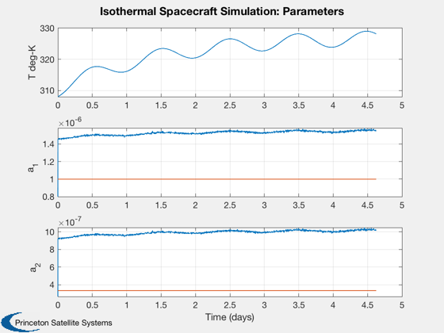
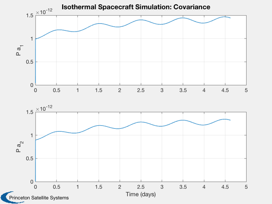

A UKF that estimates thermal parameters for an isothermal model.
The measurement is the average of all spacecraft temperatures. The user can select which parameters to estimate. The demonstration is for geosynchronous orbit. An internal heater has a diurnal (orbit frequency) heating pattern. ------------------------------------------------------------------------- See also Plot2D, TimeLabl, DupVect, RK4, Date2JD, UKFP, RVFromKepler -------------------------------------------------------------------------
Contents
%-------------------------------------------------------------------------- % Copyright (c) 2007, 2012 Princeton Satellite Systems, Inc. % All rights reserved. %--------------------------------------------------------------------------
Select the set to estimate
%----------------------------
est = [1 2];
nEst = length(est);
Set the time
%--------------- tEnd = 400000; dT = 200; % Time step in seconds n = ceil(tEnd/dT); % Number of time steps d = struct; d.jD0 = Date2JD([2007 12 20 0 0 ]); % Start date t = (0:(n-1))*dT;
Multiply the true value by this factor to get an initial estimate
%------------------------------------------------------------------
f = [0.8; 0.8; 0.8];
Thermal parameters
%-------------------- aR = 1; % Radiator area aS = 1; % Effective area normal to Sun alpha = 0.3; % Spacecraft average absorptivity epsR = 0.9; % Spacecraft radiator emissivity cP = 900; % Spacecraft average specific heat m = 1000; % Spacecraft mass
Orbital elements [a i W w e M]
%-------------------------------- el = [42167 0 0 0 0 0]; mCP = m*cP; d.a1 = epsR*aR/mCP; % Coefficient of quadratic temperature turn d.a2 = alpha*aS/mCP; % Coefficient of the input flux d.a3 = 1/mCP; % Coefficient of the internal power wTrue = [d.a1;d.a2;d.a3];
Starting temperature
%---------------------
x = 308;
Estimation parameters
%---------------------- u = struct; u.x = x; u.int = 'RK4'; u.rHSFun = 'RHSIsothermalUKF'; u.measFun = 'GXUKF'; u.measFunData = []; u.alpha = 0.5e-4; u.kappa = 0; u.beta = 2; u.dT = dT; u.param = est; u.rHSFunData = d; u.rHSFunData.param = est; % Parameters to estimate sigY = 0.001; u.rY = sigY^2; % Measurement noise covariance u.rP = 1e-9; % Process noise covariance u.p = diag(((1-f(est)).*wTrue(est)).^2); % Initial covariance u.w = f(est).*wTrue(est); % Initial parameter estimate u = UKFP('initialize', u );
Orbit
%------
rECI = RVFromKepler( el, t );
Internal power with diurnal variation
%--------------------------------------- a = linspace(0,2*pi*dT*n/86400,n); p = 160*(1 + sin(a)); % Watts
Run the simulation
%-------------------- xPlot = zeros(1+2*nEst,n); for k = 1:n % UKF. Store old value of x. The parameter estimator % is assumed to have a perfect state estimate. % The only state is the temperature so this is a % reasonable assumption. %--------------------------------------------------- u.x = x; % Simulation %----------- d.p = p(k); d.rECI = rECI(:,k); xPlot(:,k) = [x;u.w;diag(u.p)]; x = RK4( 'RHSIsothermal', x, dT, t(k), d ); % UKF. This must be after the propagation %---------------------------------------- u.t = t(k); % rHSFunData is the same as d above %---------------------------------- u.rHSFunData.rECI = rECI(:,k); u.rHSFunData.p = p(k); % The measurement plus noise %---------------- y = x + sigY*randn; % The parameter estimator %------------------------ u = UKFP( 'update', u, y ); end
Plot the results
%------------------ [t,tL] = TimeLabl(t); % This arranges the data into three plots and creates plot labels %---------------------------------------------------------------- wL = {'a_1' 'a_2' 'a_3' }; yL = {'T deg-K'}; yD = {'[1]'}; yP = {}; for k = 1:nEst yL = [yL(:)' {wL{est(k)}}]; yD = [yD(:)' {sprintf('[%i %i]',k+1,nEst+est(k)+1)}]; yP = [yP(:)' {sprintf('P %s',wL{est(k)})}]; end wTrue = DupVect(wTrue,n); Plot2D( t, [xPlot(1:nEst+1,:);wTrue], tL, yL, 'Isothermal Spacecraft Simulation: Parameters', 'lin', yD ); Plot2D( t, xPlot(nEst+2:end,:), tL, yP, 'Isothermal Spacecraft Simulation: Covariance' ); %-------------------------------------- 